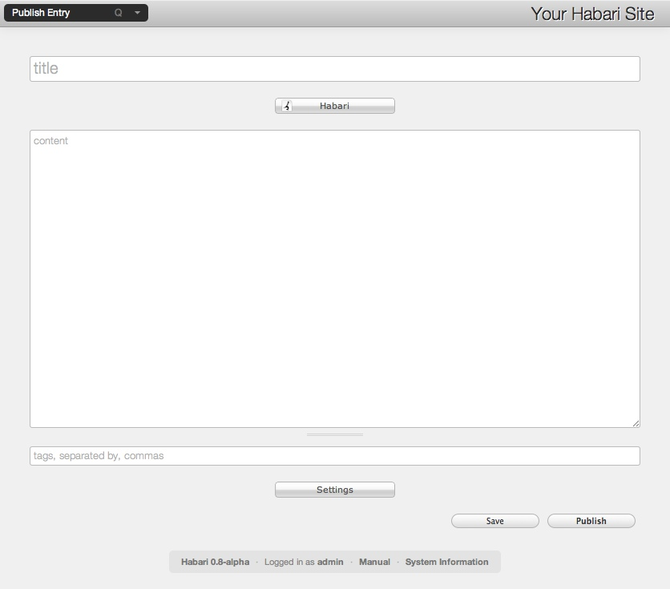

Welcome to Habari, the next-generation online publishing platform!
Habari was built from the ground-up with a firm understanding of the current state of blogging, and with a strong eye toward the future of internet publishing. Habari strives to make it as easy as possible to publish your content. It stays out of your way as much as it can, and lends a hand where it's needed.
As a Free Software project, Habari's most valuable asset is the community of users and developers who collaborate to improve the product. Habari is built by people just like you: folks with an interest in blogging and internet publishing.
After you have installed Habari, go to http://yoursite.com/admin/. You will be taken to a login page. Enter your user name and password to open up Habari's administration interface. You will be greeted by the Dashboard. This page provides a snapshot of useful information, such as the total number of posts and comments on your site, the number of posts you've made, and more. Later you can install plugins to add new modules to the dashboard, greatly expanding its usefulness.
The primary way you will interact with Habari is through the main menu. The main menu is accessed by placing your mouse at the top left of the window. The menu should automatically drop down, to reveal to you the available choices. The menu items users see will be controlled by the permissions assigned to them by the site administrator. Clicking on any menu item will take you to the corresponding page within the administrative interface. For details on each menu item, see the corresponding section of this manual.
It should be noted that the main menu can also be accessed by keyboard shortcuts. If you press the Q key on your keyboard, the menu should expand. Press the Q key again to hide the menu. When the menu is displayed, each menu item has a keyboard shortcut displayed to the right. Using the keyboard shortcuts you can quickly navigate through Habari. Want to create a new entry? Press Q, then the 1 key. Want to change your site's theme? Press Q, then T. Want to add a new user? Q U.
You can create your first post by clicking on the main menu, then selecting "Create Entry".
You are now looking at the publish entry page, by default you have three fields into which to enter information.
Pressing the Save button will save your work into the Habari database. The post will still be a Draft, which means it is not available for the public to read. You can edit and save drafts as many times as you like, to make sure you get the post just right before letting the world read it. When you are satisfied with your post, click the Publish button. This will make the post visible to the world on your front page, as well as in your Atom syndication feed. Congratulations, you've posted your first entry!
You also have an additional button between the Tag box and the Save/Publish buttons, the Settings button. It contains optional extras you may wish to use. Clicking it opens a pagesplitter (so called because it splits the page).